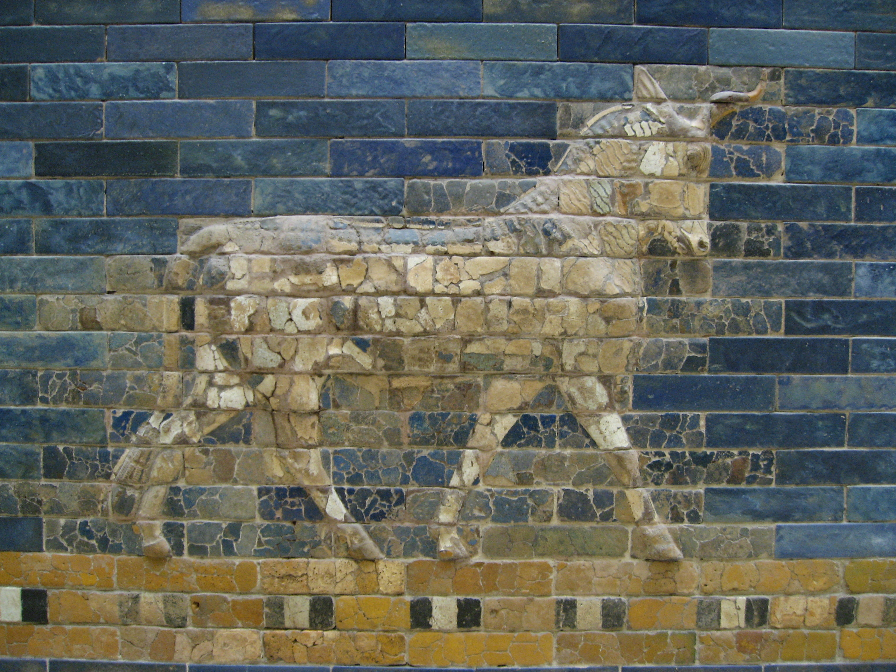

🏺 อารยธรรมเมโสโปเตเมีย

อารยธรรมเมโสโปเตเมียเป็นหนึ่งในอารยธรรมแรกเริ่มของโลก เกิดขึ้นบริเวณดินแดนระหว่างแม่น้ำไทกริสและยูเฟรทีส ซึ่งปัจจุบันอยู่ในบริเวณประเทศอิรักและพื้นที่ใกล้เคียง พื้นที่ดังกล่าวมีดินที่อุดมสมบูรณ์จากตะกอนของแม่น้ำ จึงเหมาะแก่การเพาะปลูกและการตั้งถิ่นฐานของมนุษย์
ชาวสุเมเรียนเป็นชนกลุ่มสำคัญที่สร้างเมืองขึ้นหลายแห่ง และมีการพัฒนาระบบตัวอักษรคูนิฟอร์มสำหรับบันทึกข้อมูล ต่อมามีอาณาจักรสำคัญ เช่น บาบิโลน อัสซีเรีย และเปอร์เซียเข้ามามีบทบาท
มรดกสำคัญของเมโสโปเตเมีย ได้แก่ การประดิษฐ์ตัวอักษร กฎหมายฮัมมูราบี ระบบชลประทาน ความรู้ด้านคณิตศาสตร์ ดาราศาสตร์ และการจัดตั้งสังคมเมือง ซึ่งล้วนมีอิทธิพลต่อพัฒนาการของอารยธรรมในยุคต่อมา